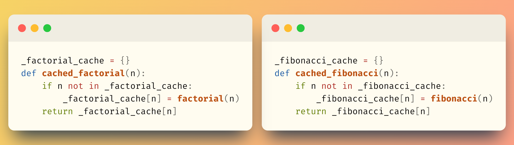

Cache wrapper#
Instead of modifying the original function factorial to use the dictionary cache inside, you can refactor the previous solution to be slightly smarter.
You can define a second function, called cached_factorial, that adds a cache around the function factorial:
def factorial(n):
result = 1
while n > 1:
result *= n
n -= 1
return result
_factorial_cache = {}
def cached_factorial(n):
if n not in _factorial_cache:
_factorial_cache[n] = factorial(n)
return _factorial_cache[n]
This alternative solution fixed one problem: the function factorial remains “pure” in the sense that it only has to worry with computing the result.
It does not contain more lines of code that are dedicated to working with the cache dictionary.
This idea of wrapping the original function in a second function – without modifying the implementation of the original function – is more general, and the “without modifying the implementation of the original function” is the key idea.
Now, in modern Python you don’t really need to implement a function factorial for yourself, since you can just import it from the module math.If you do, and if you still want to add a cache to the function factorial, you have to use the approach of the cached_factorial function:
from math import factorial
_factorial_cache = {}
def cached_factorial(n):
if n not in _factorial_cache:
_factorial_cache[n] = factorial(n)
return _factorial_cache[n]
Using this approach, you can add caches to other functions without modifying their implementation. This is another advantage of the approach with the wrapper function: it works even if you don’t have access to the implementation of the function.
To see another advantage of this wrapper approach, you’ll do a short exercise.
Take the function fibonacci from below, which you cannot find in the module math, and add a cache to it by writing a function cached_fibonacci.
You can’t modify the code you are already given:
def fibonacci(n):
if n < 2:
return n
return fibonacci(n - 1) + fibonacci(n - 2)
If it helps, you can look at the function cached_factorial from above, since the code for cached_fibonacci should be similar.
If you understood the pattern correctly, you should have written something like the following:
_fibonacci_cache = {}
def cached_fibonacci(n):
if n not in _fibonacci_cache:
_fibonacci_cache[n] = fibonacci(n)
return _fibonacci_cache[n]
Now comes the interesting part… Can you see how the code is essentially the same?

Maybe you can do something to avoid this code duplication?